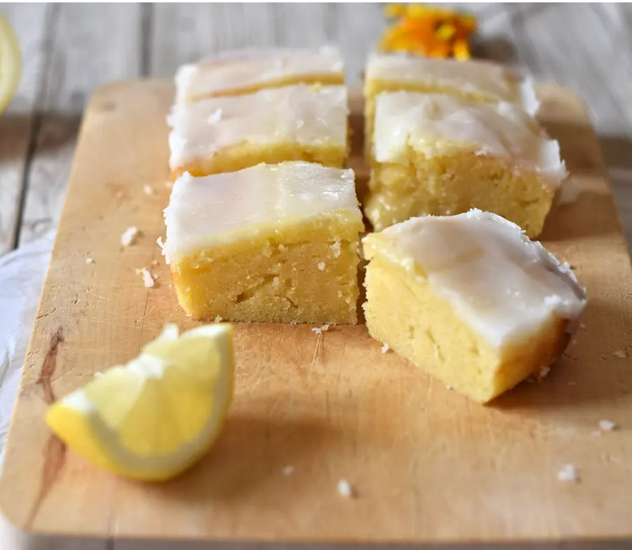
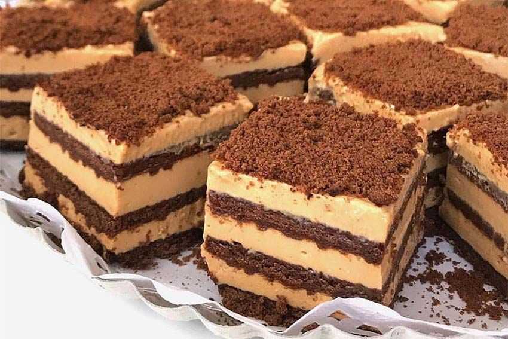

Cascamos los huevos en un boul, agregamos 100gr de azucar y batimos hasta romper el ligue de los huevos.
Agregamos la leche y revolvemos hasta que se forme una mezcla homogénea. NO tiene que quedar espumoso.
Por otro lado para le caramelo, en una sarten a fuego medio colocamos los 100gr de azucar y revolvemos constantemente con una cuchara de medera.
Una vez que el caramelo tenga un color marron clarito lo sacamos del fuego y lo vertemos en una flanera y lo exparcimos.
Luego vertemos la mezcal del flan, cuando ya tenemos tomo prepadado ponemos la flanera dentro de una fuente (apta para horno) y le ponemos agua para cocinarlo a bañp maría.
OPCIONAL: ponerle una tapa de aluminio para que no se le forme una costrita.
Llevamos el flan a un horno mínimo (160°) durante 40mins aproximadamente. Para saber si está listo metemos un cuchillo y tiene que salir seco.
Antes de desmoldarlo tenemos que esperar a que se enfrie.
¡Emplatar y disfrutar!
Lemonies

INGREDIENTES
Harina de trigo "0000" 150gr.
Manteca 150gr.
Huevos 3und.
Ralladura de 1 limón.
Jugo de un limón.
PARA EL GLASEADO
Azucar glas 150gr.
Jugo de limón 3 a 4cdas.
PASOS A SEGUIR
En un boul colocar la manteca (blanda) y el azucar, batir hasta obtener una crema.
Añadimos los huevos de a uno, incorporar y luego incorporar el resto.
Incorporamos la ralladura de limón y la mitad de la harina. Mezclamos todo con una espatula hasta incorporar todo.
Agregamos el jugo de limón, integramos y luego añadimos el resto de la harina.
En un fuente colocamos papel manteca y bertemos la preparación y la distribuimos de forma pareja.
Horneamos a una temperatuda media 180° durante 20mins.
Una vez horneado desmoldamos y dejamos enfriar.
Preparacion del glaseado.
En un boul colocamos el azucar glas y 2cdas de jugo de limón, mezclamos hasta incorporar. Luego añadimos la otra cucharada del jugo de limón.
La consistencia no debe ser ni muy fluida ni muy seca.
Una vez frio el bizcocho colocamos el glaseado y lo exparcimos en toda la superficie y dejamos que el glaseado se endurezca.
¡Emplatar y disfrutar!
Chocotorta

INGREDIENTES
Dulce de leche 400gr.
Crema de leche 400gr.
Chocolinas 3paquetes o 750gr.
Cafe para remojar las galletas.
PASOS A SEGUIR
En boul colocar el dulce de leche y la crema, incorporar hasta obtener una mezcla homogénea.
En una fuente colocar una capa de galletas previamente remojadas en cafe, luego poner una capa ni muy fina ni muy gruesa de la mezcla anterior,
posteriormente realizar otra capa de galletas humedas y asi sucesivamente hasta completar la fuente.
Una vez terminada la torta dejar reposar en la heladera 30mins aproximadamente.